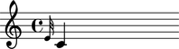

The Abjad _GraceInterface together with working with grace notes
The Abjad _GraceInterface class manages graces notes attaching to notes, rests, chords and skips.
Public interface
Attributes
All types of leaves have a grace container, so all Leaves can have grace notes (or rather, grace Leaves) attached to them. Inversely, all types of leaves can be grace leaves.
Grace Leaves can occupy one of two position relative to their carrier Leaf (i.e. relative to the Leaf they are assigned to): before and after.
Grace notes are managed through the grace interface. All Leaves posess this interface.
abjad> note = Note(0, (1, 4)) abjad> note.grace
The grace interface has two attributes: before, after. Leaves assigned to the before attribute of the grace interface are placed before the carrier Leaf.
abjad> note = Note(0, (1, 4)) abjad> note.grace.before = Note(4, (1, 32)) abjad> show(note)
Analogously, Leaves assigned to the after attribute of the grace interface are placed after the carrier Leaf.
abjad> note = Note(0, (1, 4)) abjad> note.grace.after = Note(4, (1, 32)) abjad> v = Voice([note]) abjad> show(v)
Grace notes placed before the carrier note can have one of three styles or types:
- grace
- acciaccatura
- appoggiatura
Set the type by assigning the corresponding string to the before attribute of the grace interface.
abjad> note = Note(0, (1, 4)) abjad> note.grace.before = Note(4, (1, 32)) abjad> note.grace.before = 'acciaccatura' abjad> show(note)

Grace notes placed after the carrier have a default 'after' type and cannot be changed.
_Leaf.grace.before and _Leaf.grace.after accept a list of Leaves.
abjad> note = Note(0, (1, 4)) abjad> note.grace.before = [Note(4, (1, 32)), Note(5, (1, 32)), Note(7, (1, 32))] abjad> show(note)
_Leaf.grace.before and _Leaf.grace.after accept a Grace container.
abjad> note = Note(0, (1, 4)) abjad> note.grace.before = Grace([Note(4, (1, 32)), Note(5, (1, 32))]) abjad> show(note)
To do
Figure out why _GraceInterface inherits from object instead of _Interface.